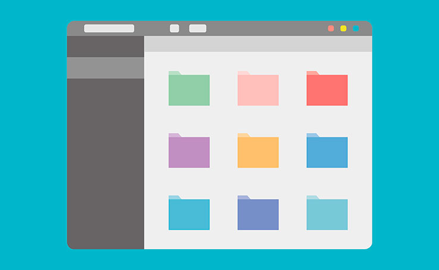
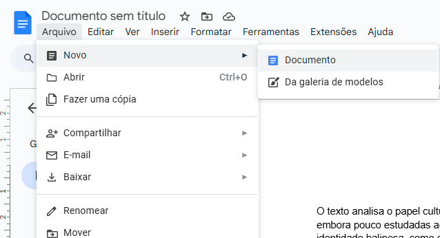
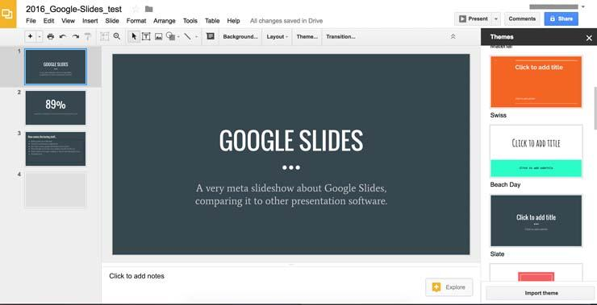

Ferramentas Tecnológicas para Diversificar as Aulas:
Ensinar, hoje em dia, é enfrentar desafios diários: captar a atenção dos alunos, adaptar
conteúdos às novas realidades e acompanhar a evolução constante da tecnologia. Tudo isso exige
criatividade, paciência e, acima de tudo, ferramentas que realmente façam sentido dentro da sala
de aula.
Pensando nisso, este curso foi criado especialmente para professores do Ensino Fundamental e
Médio que querem inovar na forma de ensinar — de maneira prática, acessível e conectada com o
dia a dia da escola.
Durante os encontros, você vai conhecer e explorar recursos como Google Docs, Slides, Drive,
Canva, Padlet, Mentimeter, Kahoot, Quizizz e outros que têm o potencial de transformar suas
aulas em momentos mais dinâmicos, criativos e significativos.
Mais do que apenas “aprender a mexer”, o objetivo aqui é usar essas ferramentas com intenção
pedagógica — mostrando que é possível diversificar suas práticas sem complicar.
Além disso, abordaremos também noções de Informática Básica, fundamentais para dar mais
segurança no uso do computador, do navegador, dos arquivos e das plataformas digitais. Afinal,
dominar o básico é o primeiro passo para explorar todo o potencial das ferramentas educacionais
com autonomia e confiança.
Ao longo do curso, vamos trocar experiências, testar ideias e, principalmente, construir juntos
novas formas de ensinar — com leveza, propósito e sensibilidade para os tempos de hoje.
Este espaço é seu. Fique à vontade para explorar, experimentar e reinventar sua prática docente.
Vamos nessa?
Clique nas imagens para acessar o respectivo site!
● Vivemos em um mundo cada vez mais digital — e compreender o básico da informática deixou de ser
um diferencial para
se tornar uma necessidade. Saber utilizar o computador, navegar com segurança na internet,
organizar arquivos e
entender o funcionamento dos principais programas é essencial tanto para professores quanto para
alunos. Nesta aula,
vamos explorar conceitos fundamentais de informática básica, focando na autonomia digital como
ferramenta pedagógica
e de inclusão.
Acesse um pdf sobre Sistemas sistemas operacionais 👇
O sistema operacional é a base de funcionamento de qualquer computador. Ele gerencia os recursos
da máquina (como
memória, disco e periféricos) e oferece a interface para o usuário executar tarefas. Exemplos
comuns são o Windows,
o Linux e o macOS.
Compreender o sistema operacional é essencial para localizar arquivos, configurar impressoras,
instalar programas e
realizar backups. Um bom domínio dessa ferramenta evita erros simples e aumenta a produtividade
no uso diário do
computador.
Para fins pedagógicos, o professor pode aproveitar o sistema operacional para ensinar
organização digital, como
criação de pastas por disciplina, nomeação correta de arquivos e uso de atalhos de teclado que
facilitam a
navegação.
● 💾 Proponha que os alunos organizem pastas por matéria em seus computadores.
● ⌨️ Faça uma atividade com comandos de atalho (Ctrl + C, Ctrl + V, etc.).
● 🧭 Oriente os alunos na navegação segura pela internet, identificando sites
confiáveis.
● 📥 Simule uma atividade de envio de arquivos por e-mail com anexo.
● 🖥️ Proporcione uma aula prática sobre como instalar um programa simples.
🗂️ Criando e organizando pastas na área de trabalho
Criar pastas na área de trabalho é uma forma prática de manter seus arquivos organizados e
acessíveis. Para isso,
clique com o botão direito do mouse em um espaço vazio da área de trabalho, selecione “Novo” e
depois “Pasta”. Dê um
nome que ajude a identificar o conteúdo (por exemplo: “Trabalhos de Português” ou “Provas
2025”). Para mover
arquivos para dentro da pasta, basta clicar e arrastar com o mouse. Você também pode clicar duas
vezes na pasta para
abri-la e usar os atalhos Ctrl + C (copiar) e Ctrl + V (colar) para transferir documentos. Essa
organização facilita
muito a rotina digital e evita que você perca tempo procurando arquivos espalhados.

Gostou da aula? Agora responda as questões baseadas no conteúdo
Encontro 2 - Google Docs & LibreOffice
Escrever, revisar e compartilhar textos digitalmente é uma habilidade essencial na educação de
hoje. Com
ferramentas como o LibreOffice Writer e o Google Docs, é possível transformar a produção textual
em algo
colaborativo, organizado e acessível. Nesta aula, vamos explorar como essas plataformas podem
facilitar tanto o
trabalho do professor quanto o aprendizado dos alunos — da criação de documentos até o uso de
comentários e
sugestões.
Google Docs:
O Google Docs é uma ferramenta online que permite criar e editar textos de forma colaborativa em
tempo real. Ele
salva automaticamente as alterações e pode ser acessado de qualquer dispositivo com internet.
Ideal para atividades em grupo, o Google Docs permite que vários alunos escrevam e revisem o
mesmo documento
simultaneamente, com comentários e sugestões feitos pelo próprio professor — recurso excelente
para correção e
devolutiva.
Outra vantagem é a facilidade de compartilhamento: o link pode ser enviado por e-mail, WhatsApp
ou postado em
plataformas como o Google Classroom. Isso torna o processo de escrita mais interativo e
transparente.
📝 Como criar uma prova no Google Docs (Passo a passo)
Para criar uma prova no Google Docs, o primeiro passo é acessar docs.google.com com sua conta do
Google e clicar em
“Em branco” para abrir um novo documento. Comece digitando as informações de identificação da
avaliação, como o nome
da escola, disciplina, série/turma, nome do professor e a data. Você pode centralizar esse
cabeçalho e aplicar
negrito ou tamanho de fonte maior para dar destaque.
Depois, digite o título da prova (ex: "Avaliação de História – 2º Bimestre") e, em seguida,
comece a numerar as
questões. Use a tecla Enter para separar cada pergunta e mantenha um espaço entre elas para
facilitar a leitura.
Para provas objetivas, escreva a pergunta e liste as alternativas com letras (A), (B), (C)... Já
para perguntas
dissertativas, deixe linhas em branco ou espaço suficiente para que o aluno responda.
Você também pode utilizar recursos do menu "Inserir" para adicionar imagens (útil para
interpretar gráficos ou
mapas), tabelas (caso precise organizar informações) ou até links para vídeos/leituras
complementares, se for uma
prova digital.
Ao terminar, revise o texto, corrija a formatação e vá em “Arquivo” > “Fazer download” > “PDF”
se quiser salvar a
prova como arquivo. Se preferir, você pode compartilhar o link com os alunos (com permissão
somente de visualização)
ou até imprimir direto do navegador clicando em "Arquivo" > "Imprimir".
Com o Google Docs, você tem praticidade para editar, corrigir e reaproveitar avaliações futuras
— e ainda pode
manter tudo salvo e organizado no Google Drive.

Exemplo de prova:
LibreOffice Writer:
O LibreOffice Writer é um editor de texto gratuito, leve e muito funcional. Ele permite criar
documentos com uma
aparência profissional, utilizando diferentes fontes, estilos, tabelas e imagens, mesmo sem
conexão com a internet.
Uma de suas vantagens é a compatibilidade com outros formatos, como .docx e .pdf, o que facilita
o envio de arquivos
para quem usa diferentes programas. Professores podem criar provas, listas de exercícios e
cartas, e salvar tudo
diretamente no computador.
Além disso, o LibreOffice Writer é ideal para escolas com menor acesso à internet, pois não
exige conta online e
pode ser instalado facilmente. É uma excelente opção para estimular a escrita e a organização de
conteúdo de forma
simples e eficiente.
● 📄 Escreva com os alunos em tempo real
● 🔁 Reescreva textos usando o modo "sugestões"
● 🧠 Organize ideias com listas e tabelas
● 💬 Use comentários para dar devolutivas personalizadas
● 📚 Crie um caderno coletivo da turma no Docs
● 🕵️♀️ Corrija textos com caça-erros gramaticais
● 🖼️ Produza textos a partir de imagens inseridas
Gostou da aula? Agora responda as questões baseadas no conteúdo:
Encontro 3 - Canva & Google Slides
Despertar o interesse dos alunos começa com uma boa apresentação. Seja para exibir conteúdos de
forma criativa ou
para incentivar os próprios alunos a expressarem ideias, ferramentas como Canva e Google Slides
são poderosas
aliadas em sala de aula. Nesta aula, vamos explorar como criar materiais visuais envolventes,
organizados e
colaborativos, usando plataformas gratuitas e acessíveis.
Canva:
O Canva é uma plataforma gratuita de design gráfico que permite criar materiais visuais mesmo sem
ter experiência com
edição de imagem. A interface é intuitiva e oferece modelos prontos para apresentações,
cartazes, convites, infográficos
e muito mais.
Na prática pedagógica, o Canva pode ser usado tanto pelo professor — para criar recursos visuais
envolventes — quanto
pelos alunos, que podem produzir cartazes temáticos, capas de trabalhos, slides para seminários
ou portfólios criativos.
Uma das grandes vantagens do Canva é o trabalho colaborativo em tempo real, permitindo que
grupos de alunos criem juntos
o mesmo material. Isso incentiva a cooperação, a autoria e o desenvolvimento da comunicação
visual.
Exemplo do menu:
Entenda um pouco mais sobre o canva 👇
O Canva também oferece uma ampla galeria de modelos prontos e gratuitos, o que facilita a criação
de materiais mesmo
para quem não tem experiência com design. É possível personalizar todos os elementos — como
textos, imagens, cores e
formas — apenas arrastando e clicando. Isso torna a ferramenta ideal para aulas
interdisciplinares, em que os alunos
podem expressar seus conhecimentos de forma visual, criativa e personalizada. Além disso, os
trabalhos criados podem
ser baixados em diferentes formatos (PDF, PNG, JPG), impressos ou compartilhados por link com
toda a turma.
O Google Slides é uma ferramenta de criação de apresentações que funciona diretamente no
navegador e permite edição
colaborativa em tempo real. É ideal para desenvolver apresentações didáticas, atividades em
grupo ou até mesmo
seminários realizados pelos alunos.
A interface é simples e semelhante ao PowerPoint, mas com vantagens como o salvamento
automático, a possibilidade de
inserir vídeos do YouTube, links interativos e comentários durante o processo de edição. Tudo
isso sem perder o foco
pedagógico.
Professores podem criar apresentações organizadas por tema, aula ou projeto, e compartilhá-las
com os alunos por
link. Já os alunos podem produzir apresentações em grupo, treinando habilidades de organização,
síntese de conteúdo
e expressão oral.
Menu do Google Slides:

Com o Google Slides, também é possível trabalhar com modelos prontos de apresentação, o que
facilita o início da
produção, principalmente para alunos que têm mais dificuldade com design ou organização visual.
A ferramenta oferece
diversos temas com combinações de cores, fontes e layouts que ajudam a criar uma apresentação
mais coerente e
bonita. Além disso, os slides podem ser integrados com outras ferramentas do Google, como o
Forms (para inserir
enquetes) e o YouTube (para incorporar vídeos diretamente nos slides), tornando a experiência de
ensino-aprendizagem
ainda mais rica e interativa.
● 🎨Proponha que os alunos criem apresentações temáticas em duplas usando o Canva
● 🧠Crie um quiz interativo no Google Slides com links para cada resposta
● 🖼️Monte slides para exposição oral em grupo e use como avaliação formativa
● 📊Use o Slides para guiar o passo a passo de uma aula prática
● 🧩Combine Canva e Slides: crie os elementos visuais no Canva e monte a apresentação no
Slides
Entenda um pouco mais sobre o Google Slides 👇
Outra funcionalidade interessante do Google Slides é a possibilidade de inserir animações e
transições entre os
slides, o que torna as apresentações mais dinâmicas e agradáveis para o público. Isso pode ser
especialmente útil
para manter a atenção dos alunos durante uma explicação ou para estruturar melhor a apresentação
de trabalhos. Além
disso, o professor pode usar o modo “Apresentador” para visualizar anotações privadas enquanto
exibe os slides para
a turma — um recurso valioso para manter a fluidez da aula sem perder o conteúdo planejado.
Gostou da aula? Agora responda as questões baseadas no conteúdo:
Encontro 4 - Google Drive & Classroom
O que é o Google Drive?
Imagine que você tem um pendrive virtual que pode acessar de qualquer lugar do seu computador da
escola, do celular ou até de um notebook em casa.
Esse é o Google Drive: uma ferramenta de armazenamento em nuvem, gratuita para quem tem uma
conta Google (ou seja, um Gmail).
● Criar documentos de texto, planilhas, apresentações e formulários.
● Armazenar PDFs, imagens, vídeos e áudios.
● Compartilhar esses arquivos com outros professores e alunos.
● Organizar tudo em pastas, como se fosse seu armário digital.
🖥️ Como acessar o Google Drive:
● Acesse o site drive.google.com
● Faça login com sua conta Google (por exemplo, seunome@gmail.com)
● Você verá uma tela com seus arquivos e pastas. Ali é sua "nuvem pessoal".
🛠️ Vamos praticar juntos:
1- Clique em "Meu Drive" > "Nova Pasta" e crie uma com o nome: Aulas 2025.
2- Entre nessa pasta e clique em "Novo" > "Documentos Google".
3- Escreva uma ideia de plano de aula com o título "Plano de Aula – Semana 1".
4- Salve e veja como fica na sua pasta.
5- Clique em "Compartilhar" no canto superior direito e adicione o e-mail de um
colega ou deixe o link disponível como "qualquer pessoa com o link pode visualizar".
Isso tudo é ótimo para preparar e guardar seu material sem depender de pendrive ou papel.
O Google Classroom é uma plataforma de gestão de sala de aula digital. Ele permite que
professores criem turmas,
compartilhem materiais, atribuam tarefas e se comuniquem com os alunos de forma organizada e
prática.
Agora que você tem seu "armário virtual" com o Drive, vamos conhecer a sala de aula digital da
Google: o Google Classroom.
● Ele foi criado para facilitar a vida do professor, permitindo:
● Criar uma turma digital (com nome, disciplina e horário).
● Postar avisos, atividades, provas e links.
● Receber as respostas dos alunos.
● Corrigir e devolver tarefas individualmente.
● Interagir com alunos com comentários privados.
● Acesse classroom.google.com e faça login com sua conta Google.
● Clique no botão "+" no canto superior direito e selecione "Criar turma".
● Preencha os campos com o nome da turma, disciplina e horário.
● Clique em "Criar" e sua sala estará pronta!
● Agora você pode postar avisos, criar atividades e interagir com os alunos.
📝 Na aba Atividades, você pode:
● Criar uma atividade com título, descrição e data de entrega.
● Anexar arquivos do Google Drive, links ou vídeos.
● Definir se a atividade é individual ou em grupo.
● Acompanhar quem entregou e corrigir diretamente na plataforma.
🧑🏫 Na aba Pessoas, você pode:
● Adicionar ou remover alunos da turma.
● Enviar convites para novos alunos.
● Organizar os alunos em grupos.
🛠️ Atividade prática:
● Crie uma turma chamada "Aulas de Informática 2025".
● Poste um aviso de boas-vindas com o tema "Bem-vindos à nossa sala de aula digital!"
● Crie uma atividade simples, como "Apresente-se" (os seus colegas devem escrever uma
breve descrição sobre si mesmos).
● Compartilhe o link da turma com um colega para que ele possa ver como funciona.
Durante a pandemia da COVID-19, escolas e professores enfrentaram enormes desafios para manter o
vínculo com os
alunos e garantir a continuidade do aprendizado. Com o fechamento das salas de aula físicas,
muitos educadores
tiveram que adaptar, da noite para o dia, suas práticas para o ambiente digital — o que gerou
inseguranças,
dificuldades técnicas e desigualdades de acesso. Nesse cenário, o Google Classroom se destacou
como uma ferramenta
essencial, por permitir a organização de aulas, envio de atividades, correções, devolutivas e
comunicação direta com
os alunos de forma simples e acessível. Sua integração com outras ferramentas do Google, como
Docs, Slides e Meet,
facilitou a construção de um ambiente virtual de aprendizagem, minimizando as perdas
educacionais em um momento tão
crítico.
Gostou da aula? Agora responda as questões baseadas no conteúdo:
Encontro 5 - Kahoot & Quizizz
Transformar avaliações e revisões em momentos divertidos e interativos é uma forma poderosa de
engajar os alunos.
Ferramentas como o Kahoot! e o Quizizz permitem criar quizzes gamificados que estimulam a
atenção, o raciocínio
rápido e a participação de toda a turma. Nesta aula, você vai descobrir como essas plataformas
funcionam, como podem
ser usadas em diferentes disciplinas e como ajudam a tornar o aprendizado mais leve — sem deixar
de ser eficaz.
▶️ Jogo da Roleta de Perguntas
Crie uma roleta com temas variados (português, ciências, cultura geral…). A turma gira e
responde perguntas do tema sorteado. Funciona bem em grupo!
▶️ Quiz Relâmpago
Faça perguntas rápidas com tempo cronometrado. Os alunos levantam a mão ou mostram
plaquinhas com a resposta. Quem acertar mais, vence!
▶️ Quebra-Cabeça de Conteúdo
Separe um conteúdo em partes (imagens, frases, etapas) e entregue embaralhado aos
grupos. Eles precisam montar na ordem correta e explicar.
▶️ Desafio do Porta-Voz
Cada grupo estuda um mini-tema e escolhe um representante para apresentar à turma. Ótimo
para promover síntese e oralidade.
▶️ Caça ao Erro
Mostre frases com erros de ortografia ou gramática. Os alunos precisam encontrar e
corrigir os erros. Pode ser feito em duplas ou competição.
Kahoot:
O Kahoot! é uma plataforma gratuita que permite criar questionários interativos com tempo
cronometrado, sons
divertidos e um visual envolvente. Os alunos participam com seus próprios dispositivos
(celulares, tablets ou
computadores), acessando um código compartilhado pelo professor.
Ideal para revisões e diagnósticos, o Kahoot! transforma o clima da aula em uma verdadeira
competição saudável. Os
alunos acumulam pontos por respostas corretas e rápidas, o que estimula o foco e o raciocínio. É
possível criar
quizzes do zero ou usar milhares de jogos já prontos, filtrando por tema ou série.
Além disso, o Kahoot! fornece relatórios com o desempenho individual e coletivo, permitindo ao
professor analisar o
que foi bem compreendido e quais conteúdos precisam ser reforçados. Uma maneira prática e
divertida de avaliar a
turma em tempo real!
O Quizizz funciona de forma semelhante ao Kahoot!, mas com algumas diferenças importantes. Uma
delas é que o Quizizz pode ser usado tanto ao vivo quanto de forma assíncrona — ou seja, o
professor pode programar o quiz para ser feito fora do horário da aula.
A ferramenta é excelente para revisar conteúdos com calma, já que os alunos podem responder no
seu próprio ritmo, com feedback imediato a cada questão. O professor ainda pode personalizar os
quizzes com memes, músicas e temas visuais, deixando a atividade mais leve e divertida.
Outro destaque do Quizizz é a possibilidade de atribuir tarefas como lição de casa, com prazos e
relatórios automáticos. Isso facilita o acompanhamento individual de cada aluno e promove o uso
da tecnologia como apoio à aprendizagem contínua, dentro e fora da escola.
Gostou da aula? Agora responda as questões baseadas no conteúdo:
Aguarde novas atualizações.
No momento, nossa equipe está preparando com carinho e dedicação os próximos conteúdos do curso.
Em breve, novas
aulas estarão disponíveis com ainda mais ferramentas, ideias práticas e recursos criativos para
você aplicar em sala
de aula. Agradecemos pela paciência e convidamos você a continuar explorando o que já está
disponível enquanto isso.